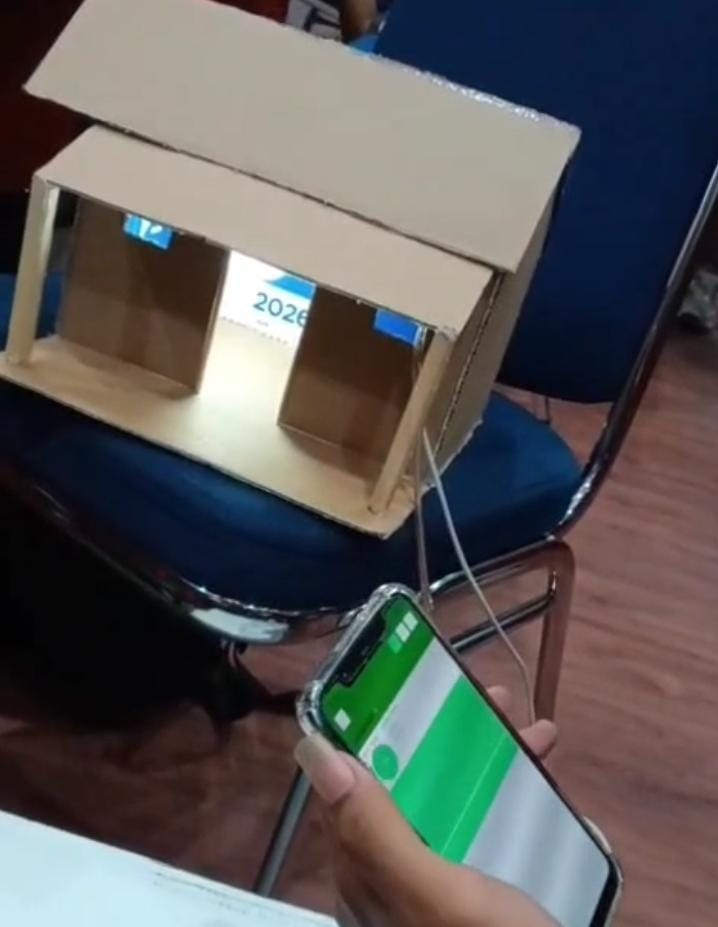
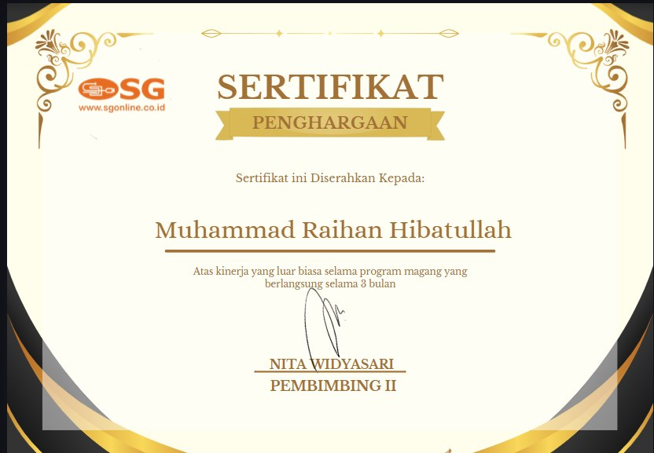

Halo, saya Muhammad Raihan
Mahasiswa D3 Teknik Komputer di Universitas Duta Bangsa Surakarta. Berpengalaman praktik industri di bidang Perakitan PC, Maintenance Hardware, dan Instalasi Jaringan LAN, serta terbiasa membangun sistem berbasis Mikrokontroler (ESP32/Arduino) dan aplikasi jaringan.
Kombinasi Pengalaman Praktik Lapangan & Solusi Komputer
Saya adalah mahasiswa D3 Teknik Komputer Universitas Duta Bangsa Surakarta dengan minat mendalam pada bidang Jaringan Komputer, IT Hardware & Troubleshooting, serta Internet of Things (IoT). Selama perkuliahan dan praktik lapangan, saya terbiasa melakukan perancangan topologi LAN, konfigurasi perangkat jaringan, hingga pemrograman mikrokontroler.
Berbekal pengalaman magang industri di SG Computer Solo selama 3 bulan, saya memiliki ketelitian mekanikal dalam merakit PC, mendiagnosis kerusakan hardware/software, terminasi kabel UTP standar internasional, dan memberikan pelayanan teknis terbaik kepada pengguna. Berorientasi pada hasil, disiplin, dan siap bekerja secara tim maupun mandiri.
Pengalaman Kerja Industri (Magang)
Penerapan nyata keahlian teknisi komputer, hardware, dan instalasi jaringan pada dunia kerja profesional.
SG Computer Solo (sgonline.co.id)
-
Perakitan & Perawatan Hardware PC/Laptop: Merakit unit PC desktop dari komponen baru sesuai kebutuhan pelanggan, pembersihan debu sirkuit, penggantian thermal paste prosesor, instalasi RAM & SSD, serta pengujian stabilitas hardware.
-
Instalasi Sistem Operasi & Troubleshooting: Menangani instalasi Windows 10/11 dan Linux (Debian), instalasi driver perangkat, perbaikan crash/bluescreen, pemulihan data partisi, dan penanganan malware/virus.
-
Instalasi Jaringan & Crimping UTP: Melakukan penarikan kabel data LAN, crimping konektor RJ45 standar T568B, pengecekan kontinuitas sinyal menggunakan LAN tester, serta konfigurasi router dan access point.
-
Pelayanan Teknis & Komunikasi Pelanggan: Mendiagnosis kendala perangkat dari konsultasi pelanggan, mengidentifikasi kerusakan suku cadang, dan memberikan rekomendasi solusi teknis secara ramah dan profesional.
Proyek yang Pernah Saya Bangun
Implementasi mikrokontroler hardware, sistem kendali IoT, dan aplikasi web terstruktur.

Smart Lighting System Berbasis ESP32 & Blynk IoT
Kendali saklar penerangan ruangan nirkabel via WiFi menggunakan mikrokontroler ESP32 DevKit, terintegrasi ke dashboard mobile Blynk dengan fitur penjadwalan waktu otomatis.

Prototipe Pintu Otomatis
Proyek perancangan prototipe pintu otomatis dengan ornamen kearifan lokal. Proyek ini menggabungkan konsep mekanik dan elektronika untuk mendemonstrasikan sistem akses pintu yang dapat bekerja secara otomatis.
Keahlian & Penguasaan Alat
Kombinasi perangkat keras komputer, infrastruktur jaringan LAN, sistem operasi, dan teknologi embedded.
Hardware & Troubleshooting
Perakitan & perbaikan PC / LaptopJaringan Komputer
Infrastruktur data & lapanganSistem Operasi & Server
Manajemen sistem & virtualisasiMikrokontroler & Dasar Web
Embedded IoT & pengolahan basis dataSertifikasi & Penghargaan Industri
Dokumentasi resmi kelulusan magang industri dan partisipasi pengembangan kompetensi teknis.

Sertifikat Penghargaan Kinerja Magang
Diterbitkan oleh: SG Computer Solo (sgonline.co.id)
Penghargaan resmi atas kinerja luar biasa selama program magang 3 bulan dalam lingkup teknisi perakitan PC, troubleshooting hardware & software, serta konfigurasi jaringan komputer.

Sertifikat Pemakalah SENATIB 2025
Diterbitkan oleh: Fakultas Ilmu Komputer, Universitas Duta Bangsa Surakarta
Sertifikat partisipasi sebagai pemakalah dalam Seminar Nasional Teknologi Informasi dan Bisnis (SENATIB) 2025 dengan judul karya ilmiah “Prototipe Gerbang Otomatis Dengan Ornamen Kearifan Lokal Berbasis Arduino Nano”.
Mari Berdiskusi & Berkolaborasi
Saya siap ditempatkan untuk kegiatan Magang / PKL, teknisi lapangan, instalasi jaringan komputer, maupun pemeliharaan perangkat keras IT.